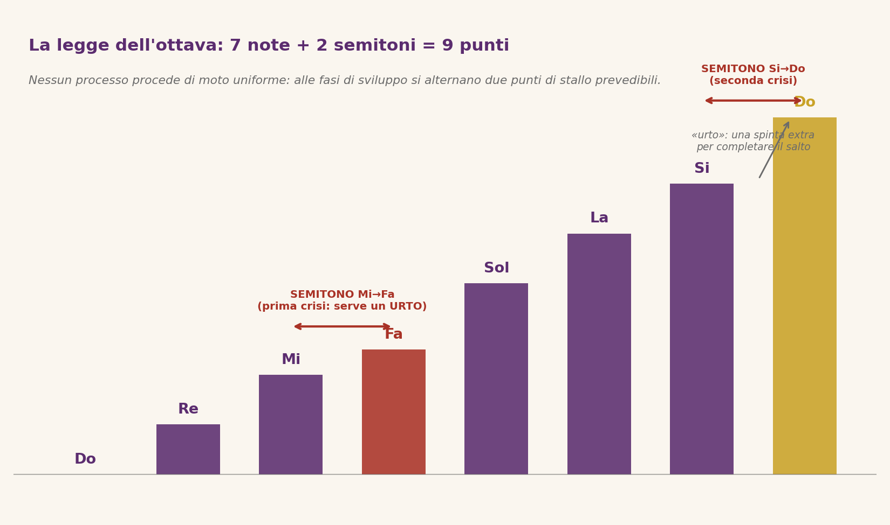
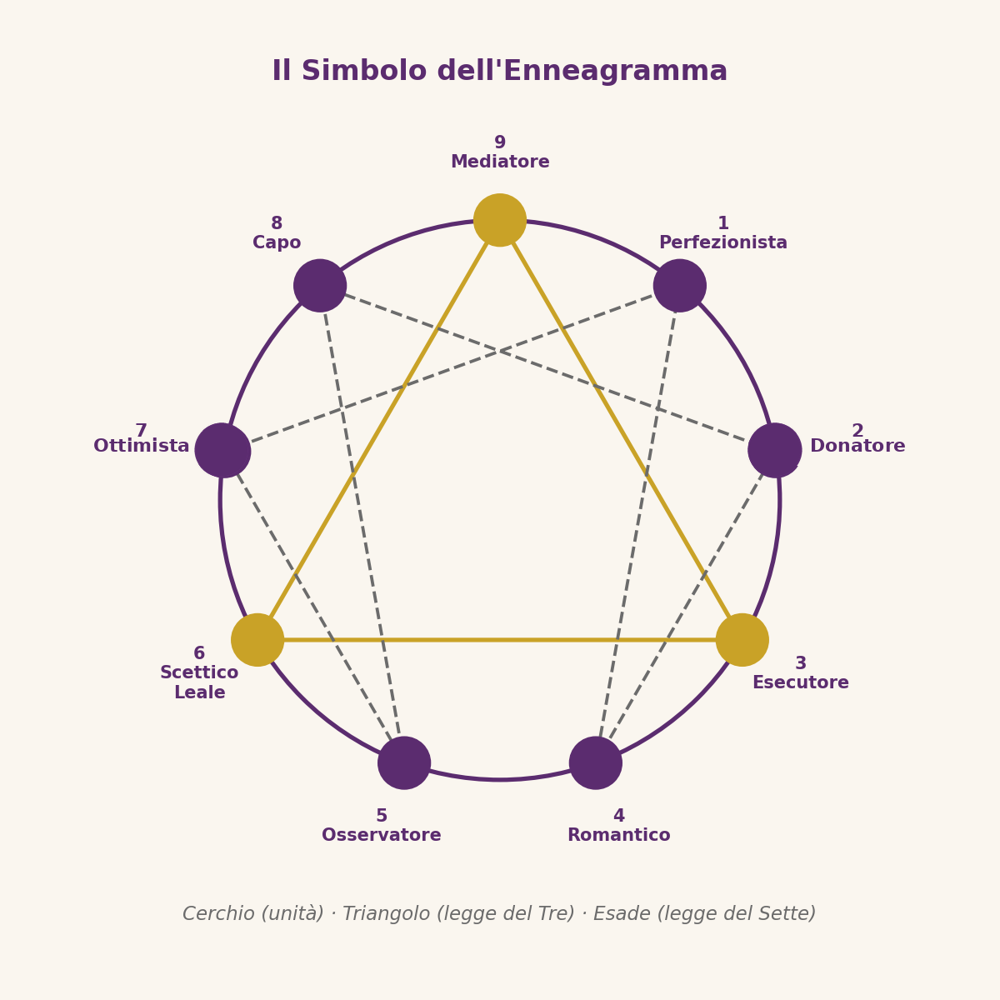

⬤ Tappa del percorso: il «che cosa» — il simbolo, la sua forma e la sua storia. (Tappa 1 di 4)
Il simbolo: un disegno che parla
Non un oracolo, ma uno specchio. L’Enneagramma non predice il futuro né etichetta le persone: è uno strumento di auto-osservazione. Le sue linee interne indicano le direzioni di movimento — verso le rigidità dello stress o verso le aperture della crescita — e ricordano che nessuno è «condannato» al proprio tipo: il simbolo disegna un movimento, e il movimento può cambiare direzione.
Tre forme, un unico messaggio. Il simbolo dell’Enneagramma unisce tre figure geometriche:
- Il cerchio: l’unità, la totalità e la perfezione. Figura senza inizio né fine, senza angoli né giunture, simbolo per eccellenza della completezza e della perfezione geometrica: racchiude tutti i nove punti e rappresenta l’Essenza, il campo interiore dentro cui si svolge il viaggio umano.
- Il triangolo: la legge del Tre. Tre forze incontro — attiva, passiva e risultante — danno origine a ogni processo: il significato simbolico del numero 3 è illustrato nel dettaglio più sotto.
- L’esade (la figura a sei punte): unitamente al triangolo, descrive il funzionamento dei processi, i passaggi e le «fratture» con cui le cose evolvono nel tempo.
L’Enneagramma incorpora e integra l’energia simbolica del numero 3 e quella del numero 7, componendo un simbolo a 9 poli.
- ENNEAGRAMMA: 3 + 6 = 9
- LEGGE DEL 7: 7 + 2 = 9
NUMERO 3
Secondo tradizioni antichissime, ogni processo di creazione e trasformazione nasce dall’incontro di tre forze — attiva, passiva e risultante. La stessa struttura a tre ricorre in ogni ambito del sapere: nella dialettica filosofica (tesi, antitesi, sintesi — e, prima ancora, nella tripartizione platonica dell’anima in ragione, coraggio e desiderio), nella teologia cristiana (Padre, Figlio e Spirito Santo) e in quella indù (Brahma il creatore, Vishnu il conservatore, Shiva il trasformatore), nell’antropologia simbolica (maschile, femminile e la vita che ne nasce), nella fisica e nella chimica (i tre stati della materia: solido, liquido, gassoso) e nella natura stessa (nascita, vita e morte; seme, pianta e frutto; passato, presente e futuro). Tre forze, un solo movimento.
NUMERO 7
Il numero 7 è da sempre il numero del completamento e del sacro. Nelle tradizioni religiose ricorre ovunque: i sette giorni della creazione e il settimo di riposo (tradizione biblica), i sette sigilli e le sette chiese dell’Apocalisse, i sette cieli dell’Islam, i sette chakra dello yoga come centri energetici che salgono dal corpo alla corona. Nell’alchimia, le sette operazioni (calcinazione, dissoluzione, separazione, congiunzione, putrefazione, distillazione, coagulazione) trasformano la materia grezza in oro — esattamente come i sette passi dell’ottava trasformano il processo. Nella filosofia: i sette saggi greci, le sette arti liberali medievali, i sette peccati capitali e le sette virtù. In cosmologia: i sette pianeti visibili a occhio nudo, che hanno dato il nome ai sette giorni della settimana. Nella natura: i sette colori dell’arcobaleno e le sette note della scala musicale. Ovunque, il sette segna il punto in cui un ciclo si compie — e un altro sta per cominciare.
La legge del sette (o dell’ottava, dal suo riflesso musicale): perché i punti sono 9
La legge del Tre non basta a spiegare il simbolo: serve una seconda legge universale, detta legge del sette (o dell’ottava, dal suo riflesso musicale). Afferma che nessun processo — un’idea, un progetto, un cambiamento interiore, la digestione di un cibo — si sviluppa in modo uniforme. Come le scale musicali, ogni processo procede per fasi (note nel caso della musica) e incontra due punti in cui la spinta naturale si esaurisce e serve una spinta extra per continuare.
L’analogia musicale. Nell’ottava Do-Re-Mi-Fa-Sol-La-Si-Do le distanze tra le note non sono uguali: tra Mi e Fa e tra Si e Do lo spazio è dimezzato. Sono i due semitoni: i punti di rallentamento, di stallo o di crisi in cui il cammino non può proseguire «per inerzia».
- Primo semitono (Mi → Fa): dopo la fase iniziale entusiasmante (Do-Re-Mi) arriva il primo passaggio critico: lo slancio si esaurisce e serve una scelta deliberata — impegno, disciplina, un aiuto esterno — per non fermarsi.
- Secondo semitono (Si → Do): vicino alla conclusione si presenta la seconda crisi: la fatica dell’ultimo tratto, la tentazione di accontentarsi di un risultato parziale. Anche qui serve un «urto» per completare davvero.
- L’urto (shock): la spinta supplementare che permette di attraversare un semitono. Non è un imprevisto negativo ma il punto di ingresso per una forza nuova, spesso esterna: un maestro, una crisi, un incontro, una scoperta.

Perché da 7 a 9. L’ottava ha sette passi, ma il simbolo ha nove punti: ai sette gradi di sviluppo vanno aggiunti i due punti di crisi. Nell’esade interno la sequenza dell’ottava si legge 1-4-2-8-5-7 (dividendo 1 per 7 si ottiene 0,142857); i «vuoti» tra 2 e 4 e tra 5 e 7 sono esattamente i semitoni Mi-Fa e Si-Do, e vengono colmati dai vertici 3 e 6 del triangolo. I tre vertici della legge del Tre (3-6-9) sono quindi i punti da cui entrano le forze che «urtano» il processo e lo fanno proseguire: nove punti = sette fasi + due punti di trasformazione.
Esempi della legge del sette nella vita quotidiana
- Imparare una lingua: fase Do-Re-Mi: entusiasmo e progressi rapidi. Semitono Mi-Fa: il plateau, le frasi non escono, molti abbandonano. Con un metodo e la costanza (urto) si riparte: Fa-Sol-La, conversazioni sempre più scorrevoli. Semitono Si-Do: prima di parlare con naturalezza serve un ultimo sforzo — l’immersione, il soggiorno all’estero — prima di «chiudere l’ottava».
- Un progetto di lavoro: avvio energico, primo ostacolo (bilancio, tempi, team), ripresa e consolidamento, poi crisi di fine percorso: consegna, collaudo, rinuncia al perfezionismo. I due «momenti della verità» di ogni progetto sono i semitoni.
- Un cambiamento personale: chi decide di cambiare abitudine vive la stessa musica: ottima prima settimana, prima crisi (stanchezza, scuse), ripresa, abitudine quasi consolidata, seconda crisi (vecchia identità che richiama). Chi conosce la legge dell’ottava non si stupisce delle crisi: le riconosce e prepara gli urti anzitempo.
- Il corpo stesso: nella tradizione di Gurdjieff la digestione è descritta come ottave annidate di trasformazione della sostanza nutritiva in energie sempre più sottili: anche i processi fisiologici obbediscono alla legge del sette. In pratica: il cibo entra come sostanza grezza (Do) e attraversa trasformazioni successive — masticazione, stomaco, intestino — che ne estraggono energie sempre più sottili; dove la trasformazione rallenta (i «semitoni» del processo) serve un «urto» fisiologico — un enzima, un ormone, una secrezione — per proseguire, pena l’accumulo di sostanza indigerita.
Il significato per chi osserva il simbolo: l’Enneagramma non rappresenta solo «nove tipi di persone», ma la struttura stessa di ogni processo di trasformazione. Sapere che esistono due crisi prevedibili — e che attraversandole con la forza giusta il processo si completa e ricomincia a un livello superiore — è la cifra dinamica del simbolo.

Per approfondire: come si legge il simbolo nella vita psicologica? Vai alla pagina «Come funziona».